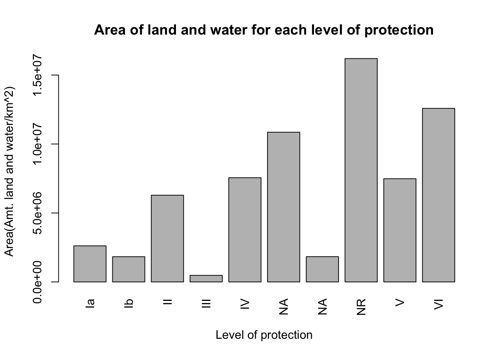

How to do the analysis in R
Data importation and filtering
Let’s explore the protected areas data from the World Database on Protected Areas.
It is best to make a folder on your computer Desktop where you will work on this assignment (if needed, review Best Practices).
Download the
.csvfile spreadsheet for protected areas in the country you are studying from the World Database on Protected Areas to the folder you made. You may rename the.csvfile you downloaded eg.protected_areas.csvOpen and save a new R Script in your folder. One of the first commands of your R Script will be to load your data. For example:
- In the Console, inspect your data to check that it has loaded. For example:
If your data has not loaded, the most likely problem is a spelling error or problems with specifying the path to protected_areas.csv. You might try:
the RStudio way of importing your data, or
moving
protected_areas.csvto your working directory.
- After importing the data into R, read through the metadata file that is downloaded as a pdf file along with the
.csvfile to better understand the data.
Data and metadata can be found here
https://www.protectedplanet.net/en/search-areas?geo_type=site
## TYPE WDPAID WDPA_PID PA_DEF NAME ORIG_NAME
## 1 Polygon 555564161 555564161 1 Hollis Road Hollis Road
## 2 Polygon 304827 304827 1 Wairakau Wairakau
## 3 Polygon 307492 307492 1 Waihou Forest Waihou Forest
## 4 Polygon 304829 304829 1 Wairere Falls Wairere Falls
## 5 Polygon 555564164 555564164 1 Upland Rd Upland Rd
## 6 Polygon 555564165 555564165 1 Waitioka Stream Waitioka Stream
## DESIG DESIG_ENG DESIG_TYPE IUCN_CAT INT_CRIT MARINE
## 1 Stewardship Area Stewardship Area National III Not Applicable 0
## 2 Scenic Reserve Scenic Reserve National III Not Applicable 0
## 3 Stewardship Area Stewardship Area National III Not Applicable 0
## 4 Scenic Reserve Scenic Reserve National III Not Applicable 0
## 5 Stewardship Area Stewardship Area National III Not Applicable 0
## 6 Stewardship Area Stewardship Area National III Not Applicable 0
## REP_M_AREA GIS_M_AREA REP_AREA GIS_AREA NO_TAKE NO_TK_AREA
## 1 0 0 0.03749808 0.03753839 Not Applicable 0
## 2 0 0 1.31463152 1.31601536 Not Applicable 0
## 3 0 0 0.27350461 1.13600579 Not Applicable 0
## 4 0 0 0.90794542 0.90879505 Not Applicable 0
## 5 0 0 0.02674732 0.02677135 Not Applicable 0
## 6 0 0 1.06016675 1.06108057 Not Applicable 0
## STATUS STATUS_YR GOV_TYPE OWN_TYPE
## 1 Designated 1988 Federal or national ministry or agency Not Reported
## 2 Designated 1936 Federal or national ministry or agency Not Reported
## 3 Designated 1981 Federal or national ministry or agency Not Reported
## 4 Designated 1908 Federal or national ministry or agency Not Reported
## 5 Designated 1987 Federal or national ministry or agency Not Reported
## 6 Designated 1987 Federal or national ministry or agency Not Reported
## MANG_AUTH MANG_PLAN VERIF METADATAID
## 1 Department of Conservation Not Reported State Verified 1773
## 2 Department of Conservation Not Reported State Verified 1773
## 3 Department of Conservation Not Reported State Verified 1773
## 4 Department of Conservation Not Reported State Verified 1773
## 5 Department of Conservation Not Reported State Verified 1773
## 6 Department of Conservation Not Reported State Verified 1773
## SUB_LOC PARENT_ISO3 ISO3 SUPP_INFO CONS_OBJ
## 1 NZ-WKO NZL NZL Not Applicable Not Applicable
## 2 NZ-WKO NZL NZL Not Applicable Not Applicable
## 3 NZ-WKO;NZ-BOP NZL NZL Not Applicable Not Applicable
## 4 NZ-WKO NZL NZL Not Applicable Not Applicable
## 5 NZ-BOP NZL NZL Not Applicable Not Applicable
## 6 NZ-BOP NZL NZL Not Applicable Not Applicable- You will want to do some exploration of your data. See Handling the data for how to recover the names of the columns for all the data.
## [1] "TYPE" "WDPAID" "WDPA_PID" "PA_DEF" "NAME"
## [6] "ORIG_NAME" "DESIG" "DESIG_ENG" "DESIG_TYPE" "IUCN_CAT"
## [11] "INT_CRIT" "MARINE" "REP_M_AREA" "GIS_M_AREA" "REP_AREA"
## [16] "GIS_AREA" "NO_TAKE" "NO_TK_AREA" "STATUS" "STATUS_YR"
## [21] "GOV_TYPE" "OWN_TYPE" "MANG_AUTH" "MANG_PLAN" "VERIF"
## [26] "METADATAID" "SUB_LOC" "PARENT_ISO3" "ISO3" "SUPP_INFO"
## [31] "CONS_OBJ"- You could also use the
summary()function to run a quick statistical summary of the data frame, calculating mean, median and quartile values for continuous variables. Try this in theConsole
## TYPE WDPAID WDPA_PID PA_DEF
## Length:267001 Min. : 1 Length:267001 Min. :0.0000
## Class :character 1st Qu.: 304545 Class :character 1st Qu.:1.0000
## Mode :character Median :555520803 Mode :character Median :1.0000
## Mean :295996843 Mean :0.9987
## 3rd Qu.:555608061 3rd Qu.:1.0000
## Max. :555721471 Max. :1.0000
##
## NAME ORIG_NAME DESIG DESIG_ENG
## Length:267001 Length:267001 Length:267001 Length:267001
## Class :character Class :character Class :character Class :character
## Mode :character Mode :character Mode :character Mode :character
##
##
##
##
## DESIG_TYPE IUCN_CAT INT_CRIT MARINE
## Length:267001 Length:267001 Length:267001 Min. :0.00000
## Class :character Class :character Class :character 1st Qu.:0.00000
## Mode :character Mode :character Mode :character Median :0.00000
## Mean :0.09198
## 3rd Qu.:0.00000
## Max. :2.00000
##
## REP_M_AREA GIS_M_AREA REP_AREA
## Min. : 0.0 Min. : 0.0 Min. : 0.0
## 1st Qu.: 0.0 1st Qu.: 0.0 1st Qu.: 0.0
## Median : 0.0 Median : 0.0 Median : 0.4
## Mean : 92.3 Mean : 141.9 Mean : 253.7
## 3rd Qu.: 0.0 3rd Qu.: 0.0 3rd Qu.: 3.7
## Max. :1968938.0 Max. :1981965.0 Max. :1968938.0
## NA's :12268
## GIS_AREA NO_TAKE NO_TK_AREA STATUS
## Min. : 0.0 Length:267001 Min. : 0.0 Length:267001
## 1st Qu.: 0.1 Class :character 1st Qu.: 0.0 Class :character
## Median : 0.5 Mode :character Median : 0.0 Mode :character
## Mean : 251.7 Mean : 33.5
## 3rd Qu.: 4.4 3rd Qu.: 0.0
## Max. :1982029.1 Max. :1555851.0
## NA's :12268
## STATUS_YR GOV_TYPE OWN_TYPE MANG_AUTH
## Min. : 0 Length:267001 Length:267001 Length:267001
## 1st Qu.:1982 Class :character Class :character Class :character
## Median :2000 Mode :character Mode :character Mode :character
## Mean :1749
## 3rd Qu.:2008
## Max. :2021
##
## MANG_PLAN VERIF METADATAID SUB_LOC
## Length:267001 Length:267001 Min. : 6 Length:267001
## Class :character Class :character 1st Qu.:1832 Class :character
## Mode :character Mode :character Median :1839 Mode :character
## Mean :1784
## 3rd Qu.:1848
## Max. :2012
##
## PARENT_ISO3 ISO3 SUPP_INFO CONS_OBJ
## Length:267001 Length:267001 Length:267001 Length:267001
## Class :character Class :character Class :character Class :character
## Mode :character Mode :character Mode :character Mode :character
##
##
##
## - To extract a column of the data, see Handling the data. You may use either Approach 1: base R or Approach 2:
dplyr(generally, thedplyrcommands tend to be simpler, however, it is good to also know the base R commands).
Approach 1: Base R
To view the MARINE, column of the data in the Console, try:
Be sure to type exactly MARINE after the $.
You need to write the column name exactly as it appear in the output of names(data1) or RStudio will produce an error. Remember MARINE is captalized in the data frame so be careful not to type Marine which will come out as an error.
Approach 2: dplyr
To use the dplyr functions you need to load the package (and install if you have not already done so):
For the MARINE, in the Console, try:
Note that the output of select(data1, MARINE) is a data frame.
- We want to separate protected areas identified as exclusively terrestrial from those that include marine areas. Try this in the
Console:
Creating a new object
This section is focused on subsetting the dataset which was named as data1 and creating a new object to hold the processed data. We call this data2.
- We want to filter the data to include marine areas and exclude terrestrial areas and hold it as
data2. Let’s run this code in theConsole:
- We want to compute the average size of coastal MPAs. Before we do this, we will need to filter the data to remove rows with null values in the
REP_AREAcolumn. Try this code in theConsole
- Now we can calculate the average size of the coastal MPAs. Let’s run this code:
- The median size of the coastal MPAs can also be found by running a similar code as follows:
Graphing the data
This section will give a brief overview of how to use graphs to understand some key concepts from the data which would be difficult to understand by just studying the raw data.
- First, we would like to graph the the number of areas in each level of protection. To do this, we will have to group the data according to the level of protection and count the number of areas in each level of protection and saving it as
data3. Let’s do it by running this code in theConsole
Now we delete the rows that has NAs by running this
Now we can use a barplot to show the number of areas under each level of protection. The following code is able to do this
barplot(data3$n, xlab = "Level of protection", ylab="Number of areas", names.arg=c("Ia","Ib","II","III","IV","V","VI"), las=1, main="Number of areas for each level of protection")
- Now we would like to calculate the amount of area that is strongly protected. We can do this by grouping by the
IUCN_CATcolumn of the dataset and summing theREP_AREAaccordingly and naming the resulting data asdata4. Let’s run this code in theConsole
The barplot showing the area allocations could be plotted by running this code in the Console
barplot(data4$REP_AREA, xlab = "Level of protection", ylab="Area(Amt. land and water/km^2)", names.arg=c("Ia","Ib","II","III","IV", "NA", "NA","NR" ,"V", "VI"), las=3, main="Area of land and water for each level of protection")